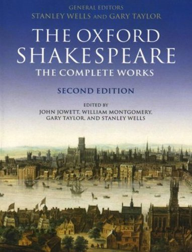
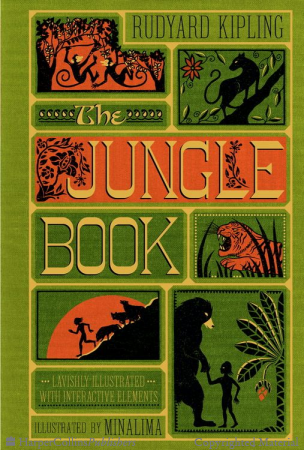
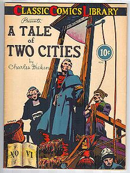
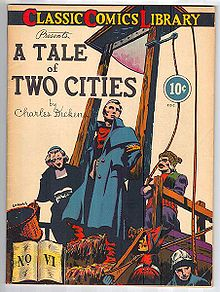

Collection of over 500+ books

Complete description of each book

Find.Explore.Read
❮
❯
Pick-A-Read

About the book
Complete Works of William Shakespeare is the standard name given to any volume containing all the plays and poems of William Shakespeare.
Some editions include several works which were not completely of Shakespeare's authorship (collaborative writings), such as The Two Noble Kinsmen, a collaboration with John Fletcher,
Pericles, Prince of Tyre or Edward III. The various editions of the Complete Works include a number of university press releases, as well as versions released from larger publishing companies. The Complete Works (especially in older editions) are often sought after by book collectors, and a number of binderies and publishing houses have produced leather bound and gilded releases for luxury book collecting.
Both mainstream and academic publishing companies have released multiple editions and versions of their own collections of Shakespeare's work, often updated periodically.
Multiple editors add to the processes of laying out the Complete Works, and many times either the main editor, publishing company, or university's name is included in the title.
Summary
Can three guys really cover thirty-seven Shakespeare plays in less than two hours? This fast-firing comedy does just that as it parodies all of the Shakespeare plays
(plus the sonnets!) with only three performers in two acts. This play is full of energy as the characters run across the stage and keep you guessing how they will pull off the
next play. Clever use of some interesting costumes also adds to the fun. The play starts with an eccentric version of Romeo and Juliet, followed by a parody of Titus Andronicus
(which is portrayed as a cooking show). Next is Othello, which is done as a rap song (the infamous “Othello Rap”). The members of the trio compete in a hilarious football game
which summarizes the histories (King John, Richard II, Richard III, Henry IV etc), complete with commentary and details of each character's rise and fall from power. As the
characters are about to come to the end of the first act, they realize they forgot to perform Hamlet. One of the actors becomes nervous and runs out of the theatre with another
actor chasing him. The final actor is left to entertain the audience by himself, which he does by telling jokes and calling for the intermission. After the intermission, the missing
two actors return and save their companion from reciting all of the sonnets. All three actors then perform their very abbreviated version of Hamlet (with a little help from the
audience), thus “completing” the canon in only an hour and a half!
Rating:
Suggested Reading

 
